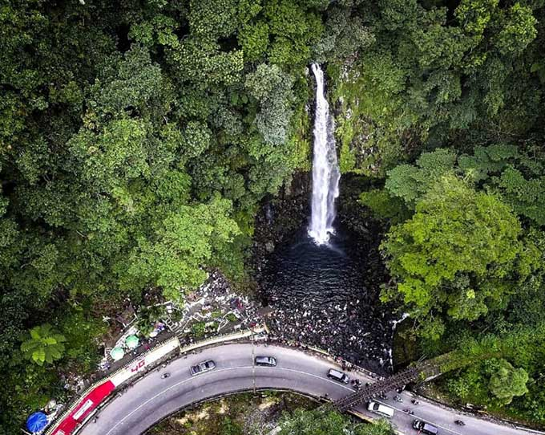
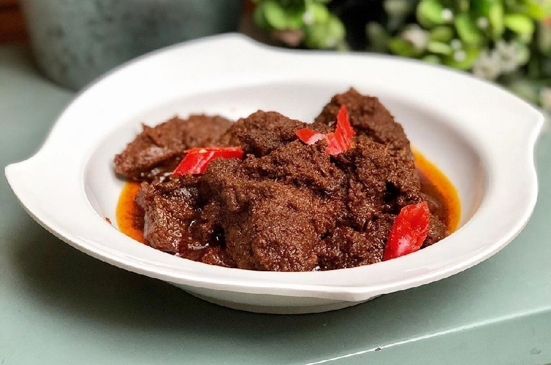

Penulis merupakan seorang mahasiswi S1 di UIN Syarif Hidayatullah Jakarta. Historia merupakan website yang membahas topik mengenai sejarah-sejarah yang ada di Indonesia. Melalui website ini penulis berharap konten yang disajikan memberikan manfaat kepada pengguna internet. untuk kedepannya penulis akan terus mencoba untuk menghadirkan konten yang berkualitas dan bermanfaat.
Hello I'm Wahdini
Welcome To My Website
About





Sejarah MinangKabau Sumatera Barat
Sumatera Barat adalah Propinsi yang mempunyai sejarah panjang, dimana setiap sejarahnya mempunyai makna tersendiri bagi masyarakat Minangkabau. Siapa yang tidak mengenal suku Minang ?. Suku ini merupkan salah satu suku yang terkenal dengan cerita rakyatnya yang begitu melegenda diseluruh tanah air. Suku Minang berada di Sumatera Barat salah satu Propinsi yang terletak di sepanjang pesisir pulau Sumatera. Padang sebagai ibu kota Sumatera Barat dikenal dengan masakannya yang khas dan dominan bumbu asli dari rempah-rempah Indonesia.
Sejarah bermula pada masa nkerajaan Adityawarman, yang merupakan tokoh penting Minangkabau. Seorang Raja yang tidak ingin disebut sebagai Raja, pernah memerintah di Pagaruyuang, daerah pusatkerajaan Minangkabau, selain itu beliau juga orang pertama yang memperkenalkan sistim kerajaan di Sumatera Barat. Sejak Pemerintah Raja Adityawarman tepatnya pertengahan abad ke-17, Propinsi ini lebih terbuka dengan dunia luar khususnya Aceh. Karena hubungan dengan Aceh yang semakin intensif melalui kegiatan ekonomi masyarakat, akhirnya mulai berkembang nilai baru yang menjadi landasan sosial budaya masyarakat Sumatera Barat.
Read More...Makanan Khas Smuatera Barat

Makanan minang banyak dikenal oleh masyarakat karena memiliki cita rasa yang khas dan lezat. Tidak hanya nasi padang, ternyata masih banyak sekali makanan khas Padang yang memiliki cita rasa yang nikmat dan wajib kamu coba.
Makanan Sumatera Barat adalah jenis kuliner yang berkembang di provinsi Sumatera Barat. Produk kuliner Sumatera Barat merupakan salah satu yang dikenal luas di Indonesia dan disebut juga dengan istilah Masakan Minangkabau yang diperkenalkan oleh para perantau Minangkabau dari berbagai daerah di Sumatera Barat. Terdapat banyak resep dan variasi masakan Sumatera Barat berdasarkan daerah, kota atau kabupatennya, antara lain Bukittinggi, Padang, Padang Panjang, Payakumbuh, Solok, Pesisir Selatan, Batusangkar, Agam, Dharmasraya dan sebagainya. Meskipun beraneka ragam masakan Minangkabau bukan hanya berasal dari kota Padang, Masakan Sumatera Barat telah terlanjur dikenal masyarakat awam dengan sebutan Masakan Padang. Makanan Sumatera Barat dikenal banyak menggunakan santan dan daging, memiliki rasa pedas dari penggunaaan bumbu dan rempah-rempah.
Read More...Wisata Sumatera Barat
Sumatera barat merupakan provinsi di Pulau Sumatera yang berada di pesisir selatan. Sumatera Barat yang sering di singkat Sumbar berada di barat bukit barisan sehingga memiliki bentuk geografis yang bergelombang berupa perbukitan dan pegunungan.Dengan terkenalnya wisata Sumatera Barat bernuansa alam, banyak para wisatawan baik lokal maupun mancanegara untuk datang ke Ranah Minang tersebut. Tak hanya itu, wisata Sumatera Barat juga terkenal dengan objek wisata budaya dan sejarahnya.
Wisata Sumatera Barat memiliki keunikan dan daya tarik tersendiri, mulai dari bangunan bersejarah, pantai, pegunungan, hingga danaunya. Semua tempat wisata Sumatera Barat menawarkan berbagai destinasi yang menyenangkan.
Read More...
Sejarah Minangkabau Sumatera Barat
Sumatera Barat adalah Propinsi yang mempunyai sejarah panjang, dimana setiap sejarahnya mempunyai makna tersendiri bagi masyarakat Minangkabau. Siapa yang tidak mengenal suku Minang ?. Suku ini merupkan salah satu suku yang terkenal dengan cerita rakyatnya yang begitu melegenda diseluruh tanah air. Suku Minang berada di Sumatera Barat salah satu Propinsi yang terletak di sepanjang pesisir pulau Sumatera. Padang sebagai ibu kota Sumatera Barat dikenal dengan masakannya yang khas dan dominan bumbu asli dari rempah-rempah Indonesia.
Sejarah bermula pada masa nkerajaan Adityawarman, yang merupakan tokoh penting Minangkabau. Seorang Raja yang tidak ingin disebut sebagai Raja, pernah memerintah di Pagaruyuang, daerah pusatkerajaan Minangkabau, selain itu beliau juga orang pertama yang memperkenalkan sistim kerajaan di Sumatera Barat. Sejak Pemerintah Raja Adityawarman tepatnya pertengahan abad ke-17, Propinsi ini lebih terbuka dengan dunia luar khususnya Aceh. Karena hubungan dengan Aceh yang semakin intensif melalui kegiatan ekonomi masyarakat, akhirnya mulai berkembang nilai baru yang menjadi landasan sosial budaya masyarakat Sumatera Barat.
Dilihat dari sejarah singkat Minangkabau, merupakan salah satu desa yang berada dikawasan Kecamatan Sungayang, Tanah Datar, Sumatera Barat. Desa tersebut awalnya merupakan tanah lapang. Namun karena adanya isu yang berkembang bahwa kerajan Pagaruyuang akan diserang kerajaan Majapahit dari daerah Jawa maka terjadilah peristiwa adu kerbau atas usul kedua belah pihak. Kerbau terebut mewakili perperangan kedua kerajaan. Karena kerbau Minang berhasil memenangkan perkelahian maka muncul kata manang kabau yang selanjutnya dijadikan nama Nagari atau desa tersebut.
Untuk Info Selengkapnya mengenai sejarah Minangkabau kalian bisa mengunjungi website disini ya!
Makanan Khas Sumatera Barat
Makanan Minang-Sumatera Barat banyak dikenal oleh masyarakat karena memiliki cita rasa yang khas dan lezat. Tidak hanya nasi padang, ternyata masih banyak sekali makanan khas Padang yang memiliki cita rasa yang nikmat dan wajib kamu coba.
Makanan Sumatera Barat adalah jenis kuliner yang berkembang di provinsi Sumatera Barat. Produk kuliner Sumatera Barat merupakan salah satu yang dikenal luas di Indonesia dan disebut juga dengan istilah Masakan Minangkabau yang diperkenalkan oleh para perantau Minangkabau dari berbagai daerah di Sumatera Barat. Terdapat banyak resep dan variasi masakan Sumatera Barat berdasarkan daerah, kota atau kabupatennya, antara lain Bukittinggi, Padang, Padang Panjang, Payakumbuh, Solok, Pesisir Selatan, Batusangkar, Agam, Dharmasraya dan sebagainya. Meskipun beraneka ragam masakan Minangkabau bukan hanya berasal dari kota Padang, Masakan Sumatera Barat telah terlanjur dikenal masyarakat awam dengan sebutan Masakan Padang. Makanan Sumatera Barat dikenal banyak menggunakan santan dan daging, memiliki rasa pedas dari penggunaaan bumbu dan rempah-rempah.
Provinsi yang disebut-sebut sebagai surganya wisatawan ini, makanan khasnya identik dengan masakan Minang. Makanan khas Sumatera Barat yang paling terkenal adalah rendang.Untuk info selengkapnya mengenai makanan khas Sumatera Barat,kalian bisa mengunjungi website disini ya!
Wisata Sumatera Barat
Wisata Sumatera Barat
Sumatera barat merupakan provinsi di Pulau Sumatera yang berada di pesisir selatan. Sumatera Barat yang sering di singkat Sumbar berada di barat bukit barisan sehingga memiliki bentuk geografis yang bergelombang berupa perbukitan dan pegunungan.Dengan terkenalnya wisata Sumatera Barat bernuansa alam, banyak para wisatawan baik lokal maupun mancanegara untuk datang ke Ranah Minang tersebut. Tak hanya itu, wisata Sumatera Barat juga terkenal dengan objek wisata budaya dan sejarahnya.
Wisata Sumatera Barat memiliki keunikan dan daya tarik tersendiri, mulai dari bangunan bersejarah, pantai, pegunungan, hingga danaunya. Semua tempat wisata Sumatera Barat menawarkan berbagai destinasi yang menyenangkan.
Terdapat berbagai objek wisata yang bisa dinikmati saat berkunjung ke sejumlah daerah yang ada di Sumbar. Untuk mengetahui info selanjutnya tentang wisata apa saja yang ada di Sumatera Barat, kalian bisa mengunjungi website disini ya!